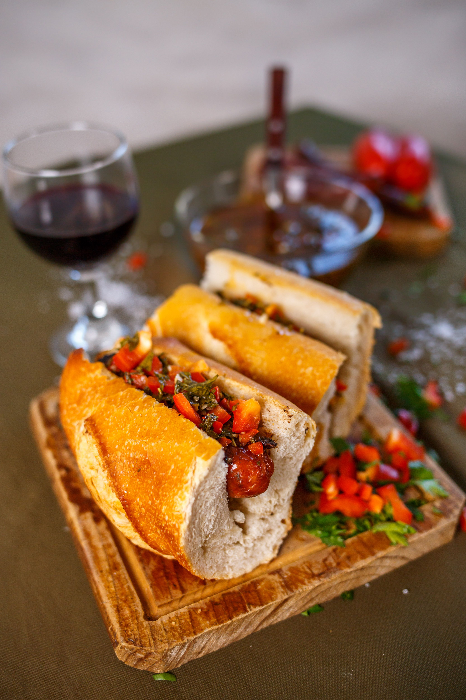

Choripan

Descripcion
consiste en un chorizo de cerdo o mixto asado a la parrilla,
colocado dentro de un pan crujiente y acompañado tradicionalmente con salsa chimichurri
Ingredientes
- Chorizos criollos o parrilleros: 4 unidades (de cerdo o mezcla vacuna/cerdo)
- Panes: 4 unidades de pan francés o tipo baguette (crujiente por fuera y tierno por dentro)
- Para el chimichurri: Perejil fresco, ajo, orégano, ají molido, aceite de oliva, vinagre de vino, sal y pimienta